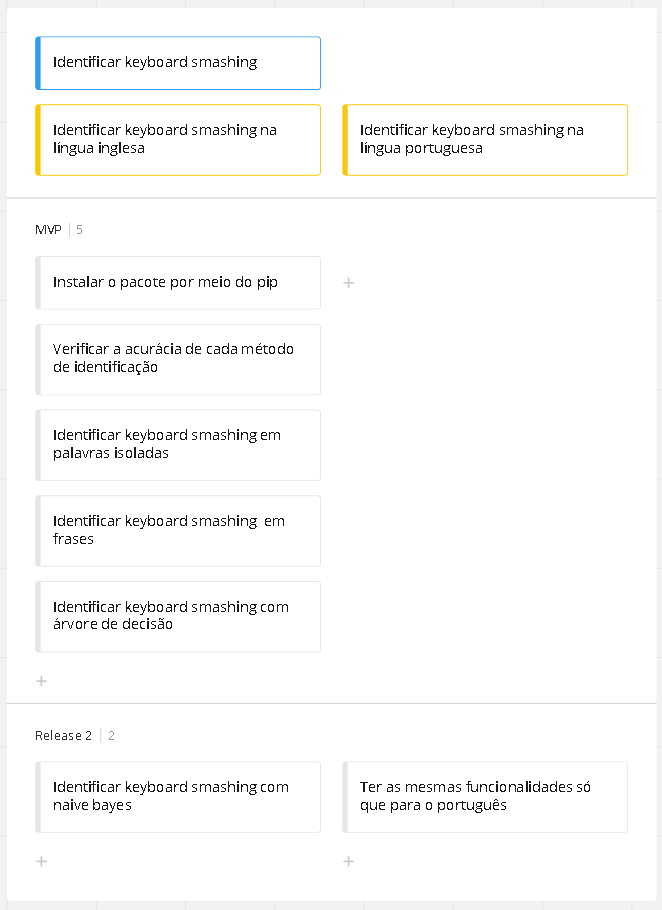

User Story Map
O objetivo do nosso projeto é a elaboração de um pacote python que tenha funções capazes de determinar, por meio de aprendizado de máquina, se entradas de texto são consideradas ou não keyboard smashing, sendo assim, o público alvo seria programadores que fariam a importação da nosso biblioteca para ajudá-los a processar suas bases de dados. Com base na descrição anterior, nosso user story map está estruturado da seguinte maneira:

Identificar keyboard smashing - É o objetivo central do projeto e que necessita de várias etapas para ser concluído.
Identificar keyboard smashing na língua inglesa - Inicialmente o escopo será limitado à língua inglesa.
Instalar o pacote por meio do pip - É preciso que os usuário consigam fazer a instalação do pacote com o pip para que seja feita a importação para seus códigos.
Verificar a acurácia de cada método de identificação - O intuito é que o pacote tenha mais de um algoritmo treinado para a identificação de keyboard smashing e como diferentes algoritmos se saem de maneira distinta a depender da situação em específico, é interessante que o usuário saiba de maneira geral qual a acurácia de determinado algoritmo antes de testá-lo em seu cenário.
Identificar keyboard smashing em palavras isoladas - Uma função simples que dada uma string como parâmetro retorne se ela é keyboard smashing ou não.
Identificar keyboard smashing em frases - Uma função que seja capaz de detectar a presença de keyboard smashing em frases/textos e retornar a resposta ao usuário.
Identificar keyboard smashing com árvore de decisão - Um algoritmo de árvore de decisão para a identificação de keyboard smashing, a priori esse seria um único modelo disponível para utilização no MVP.
Identificar keyboard smashing com naive bayes - Naive bayes é um outro modelo de aprendizado de máquina, dito isso, para uma segunda release ele seria uma outra opção de algoritmo a ser utilizado pelo usuário.
Identificar keyboard smashing na língua portuguesa - A posteriori o objetivo é estender todas as funcionalidades de identificação de keyboard smashing anteriores à língua portuguesa.